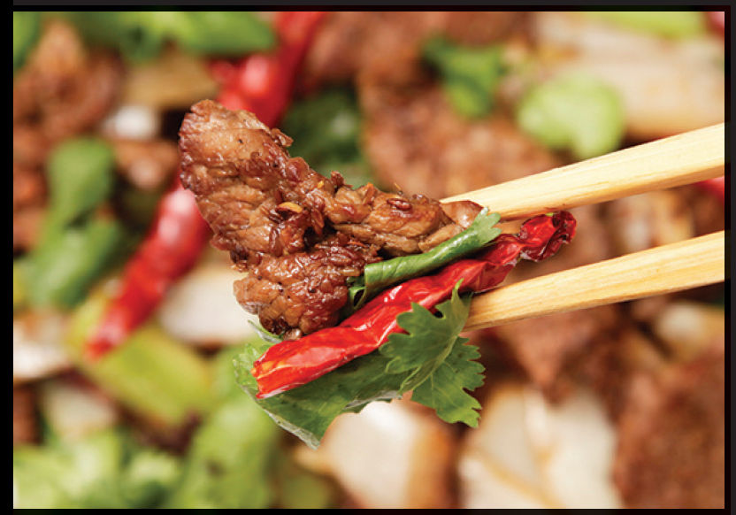

CUMIN LAMB
|
Yield Serves 4 Active Time 20 minutes Total Time 20 minutes |
This recipe also works well with beef (use any stir-fry-friendly cut, such as skirt, flank, or flap meat). |
INGREDIENTS
For the Lamb:
1 pound (450 g) lamb leg (or beef; see Note), trimmed of gristle and sliced into ¼-inch-thick slices
½ teaspoon (2 g) baking soda
For the Marinade:
3 tablespoons (about 15 g) cumin seeds
2 teaspoons (about 4 g) whole Sichuan peppercorn
12 small dried red Chinese or árbol chiles
3 medium garlic cloves, minced (about 1 tablespoon/8 g)
1 tablespoon (15 ml) light soy sauce or shoyu
For the Stir-Fry:
5 tablespoons (75 ml) peanut, rice bran, or other neutral oil
1 medium onion, cut pole to pole into ½-inch slices
3 celery stalks, sliced lengthwise into thirds and crosswise into 2-inch segments
Kosher salt
1 bunch cilantro, leaves and tender stems only

DIRECTIONS
1For the Lamb: Place the lamb in a medium bowl, cover with cold water, and vigorously agitate it. Drain through a fine-mesh strainer set in the sink and press on the lamb with your hands to remove excess water. Return the lamb to the bowl, add the baking soda, and vigorously massage the baking soda into the meat, lifting the meat, throwing it down, and squeezing it for 30 to 60 seconds.
2For the Marinade: Heat the cumin seeds, peppercorns, and chiles in a large skillet over medium-high heat, tossing constantly until fragrant, about 2 minutes. Transfer to a mortar and pestle. Pick out the chiles and set them aside. Grind the cumin and peppercorns until roughly crushed but large pieces still remain. Add the garlic and smash until a rough paste is formed. Stir in the soy sauce and scrape the mixture into the bowl with the lamb. Roughly work the marinade into the meat for at least 30 seconds.
3BEFORE YOU STIR-FRY, GET YOUR BOWLS READY:
4For the Stir-Fry: Heat a wok over high heat until lightly smoking. Add 1 tablespoon (15 ml) of the oil and swirl to coat. Add the onion and celery and cook, stirring and tossing occasionally until lightly charred and tender, about 2 minutes. Transfer to a bowl.
5Wipe out the wok and return it to high heat until lightly smoking. Add 2 more tablespoons (30 ml) of the oil and swirl to coat. Add half of the lamb and cook without moving for 1 minute. Continue cooking while stirring and tossing until lightly cooked but still pink in spots, about 1 minute. Transfer to the bowl with the onions and celery. Repeat with the remaining 2 tablespoons (30 ml) oil and the remaining lamb, adding the cooked lamb to the same bowl.
6Return the wok to high heat until lightly smoking. Add the chiles and immediately return the cooked lamb and vegetables. Cook, stirring and tossing occasionally until the lamb develops a mild crust, about 2 minutes longer. Season to taste with salt. Add the cilantro and give it one final toss to combine. Transfer to a serving platter and serve immediately with steamed rice.